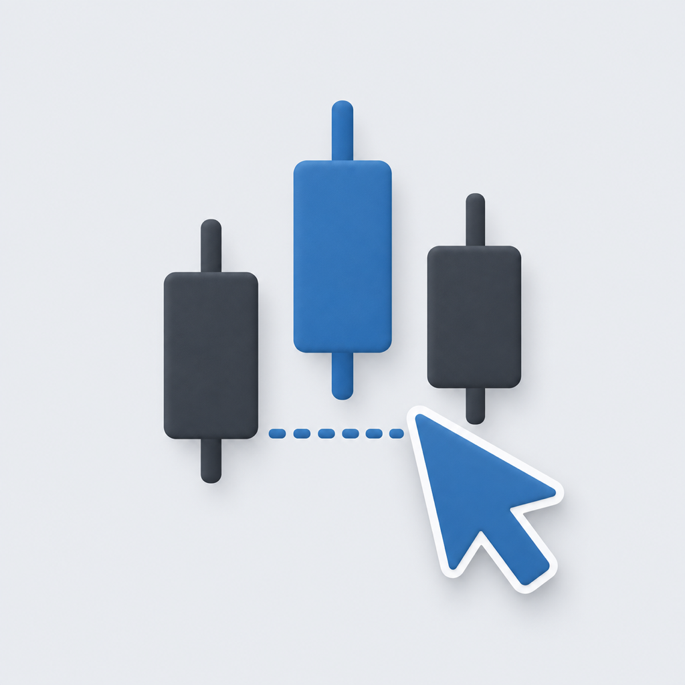

No account required
Paper balances, orders, positions, watchlists, and reminder preferences stay on this device.

Stock MasterySTOCK MASTERY / SUPPORT & LEGAL
Get help with the app and learn how your information and third-party content are handled. Stock Mastery offers Taiwan and U.S. market information, financial references, and practice with virtual funds. It does not provide real trading.
Paper balances, orders, positions, watchlists, and reminder preferences stay on this device.
There are no advertising, third-party analytics, or cross-app tracking SDKs.
Taiwan and U.S. paper trades use virtual funds and are never sent to a broker or exchange.
SUPPORT
Email us about technical issues, app questions, content corrections, or feature suggestions. Support is available in Traditional Chinese and English.
Developer and support: Yung Wen Cheng
Product: Stock Mastery / 股神養成
Do not send passwords, verification codes, identity documents, or brokerage credentials. We will not ask you to transfer money or give us control of an investment account.
These links open your email app. You can also copy the address above. This page has no upload form and does not automatically attach app records.
Taiwan quotes use official end-of-day data; selected U.S. quotes use delayed data. Neither is a guaranteed real-time feed. Holidays, pending publication, or connection failures may leave the previous trading day or cached data on screen. Check the displayed timestamp and try refreshing.
No. Balances, orders, positions, and results are virtual records on your device. They are never sent to a broker and cannot be withdrawn or redeemed. A simulated result does not guarantee execution in a real market.
No. A custom price applies only to that paper fill. Order history labels it as user-entered and unverified. Quotes, charts, and position values still use the delayed data received by the app. A custom price is not a verified market quote and never charges real funds.
Check Review Reminders in Profile and notification permission in system Settings. Reminders are scheduled Monday through Friday at 6:00 p.m. in your device's local time, including exchange holidays. They are not market-update or fill alerts. Focus modes and system settings can affect delivery; other features remain available without notifications.
In Profile, reset a paper account or use Clear Personal Settings. Clearing removes local watchlists, recent views, learning records, and paper-trading records; read the confirmation shown in the app. There is no login account or account-deletion process. Email support to request deletion of correspondence.
© 2026 Yung Wen Cheng (Stock Mastery). All rights reserved.
Yung Wen Cheng reserves the applicable rights in the original code, text, and design of Stock Mastery and this website to the extent protected by copyright. Stock Mastery is a product name, not the owner of third-party market data.
Unless permitted by law, fair use, or a separate license, obtain the relevant rights holder's permission before reproducing, adapting, or distributing protected content. This notice does not limit rights granted to users by law.
Taiwan data sources include the Taiwan Stock Exchange and Taipei Exchange; selected U.S. data comes from Yahoo Finance. Rights in third-party trademarks, names, indices, and data remain with their respective holders and are not included in our original-content copyright notice.
Attribution does not itself establish commercial or redistribution rights, or imply any partnership, sponsorship, certification, or endorsement by these organizations or Apple. Use of third-party content remains subject to applicable terms and licenses. This page grants no permission to reuse that content.
If you believe content in the app or on this website affects your rights, email us with its location, the work or right involved, your relationship to the rights holder, and a reply address. Public links can help identify the material; do not send identity documents or sensitive records.
We will assess the report and, as appropriate, follow up, correct, or remove the material. Contact victoriacheng1122@gmail.com.
This policy covers the Stock Mastery app, widgets, and this support website. The responsible developer is Yung Wen Cheng. Privacy contact: victoriacheng1122@gmail.com.
The current version does not require an account and does not ask for your name, phone number, address, or payment details. The app does not request access to your camera, photos, microphone, location, contacts, HealthKit data, or tracking permission.
The app connects to Taiwan Stock Exchange and Taipei Exchange services for Taiwan stocks, ETFs, indices, valuation data, trading activity, price history, and corporate actions. The market widget retrieves end-of-day data from the Taiwan Stock Exchange. U.S. screens connect to Yahoo Finance for delayed daily and historical data covering a curated set of stocks, ETFs, and major indices.
A request for a security's price history includes its symbol and the requested dates or period, so the provider may learn which security was queried. The app does not upload complete watchlists, complete browsing histories, paper positions, orders, or trading notes. This is separate from sending the individual parameters needed to retrieve market data.
The app's market-data connections do not use provider cookies or shared system credential storage. This does not mean providers do not process connection information.
As with ordinary internet connections, these providers may receive an IP address, User-Agent, and standard connection metadata. Their handling of that information is governed by their respective policies.
Virtual TWD and USD balances, paper orders, positions, results, order history, and custom fill prices are stored on your device. Watchlists, recent views, market cache, notification preferences, bookmarks, reading progress, and getting-started progress are also stored locally to preserve your state. This information is not uploaded to our servers and is never sent to a broker or exchange.
Review reminders are optional. The app requests iOS notification permission only after you view an explanation and choose to enable reminders. They are scheduled on your device Monday through Friday at 6:00 p.m. local time, including exchange holidays, rather than triggered by market updates or order fills. You can disable them in the app or system settings. Declining permission does not affect any other feature.
When you choose to email us, we receive your email address, sender name, message, and any attachments you provide. We use them only to respond, investigate issues, handle privacy or copyright requests, and follow up as needed, not for advertising. Include only information necessary for your request.
Support email is handled through Gmail and may be stored internationally under its service arrangements. We retain correspondence while needed to handle the request and necessary follow-up, then delete information no longer needed unless retention is required for legal obligations or disputes. Email us to request access, correction, or deletion of contact information we hold. We will explain any required retention. Backup deletion timing is governed by the email provider's policies.
This website is hosted on GitHub Pages. We have not added analytics, tracking pixels, advertising, or our own cookies. GitHub may process IP addresses, browser information, and access logs for hosting, security, and operations. External websites handle information under their own policies when you follow their links.
Local records remain until you reset a paper account, clear personal settings in Profile, or delete the app. The system may remove cached market data sooner. Offloading an app can preserve its data and is different from deleting it. Device or computer backups may retain earlier copies; manage these through Apple's backup settings.
We have no account server that can remotely access or delete local records. You can change notification permission in system Settings at any time. For access, correction, or deletion of email correspondence, contact the support address above.
Stock Mastery provides end-of-day market information, paper-trading practice, and general educational material. It is not a broker. A paper order creates only a virtual record on your device, uses no real funds, and is never submitted as a real order. Simulated fills, commissions, taxes, and results are educational estimates and do not include every market condition, exchange rate, regulatory fee, brokerage fee, discount, minimum fee, tax effect, or product exception.
The app does not provide real trading, brokerage account opening, managed investing, personalized investment advice, or guaranteed returns. Taiwan data is end of day. U.S. data covers selected securities and uses delayed daily data; it is not a real-time or complete market feed. Data may be delayed, incomplete, or temporarily replaced by cached information. Confirm any real decision with official exchange and brokerage information.
If a future version introduces accounts, cloud sync, subscriptions, or new data practices, this page will be updated. Questions about this policy can be sent to victoriacheng1122@gmail.com.